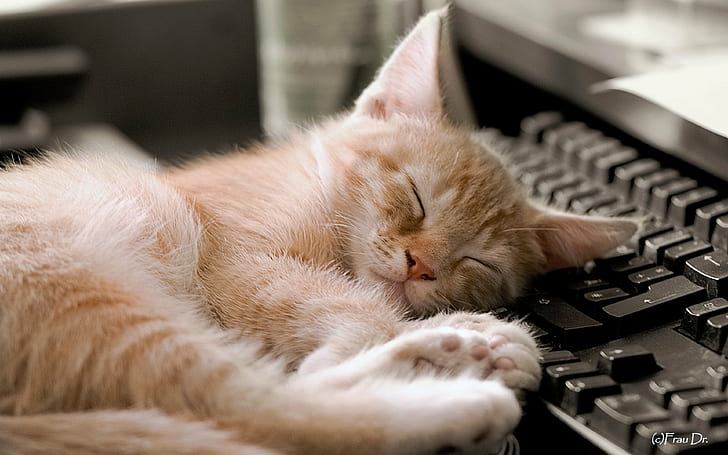

Mocha Cinca Cat

Mocha Cinca cat disebut dengan anak kucing adalah sebutan kucing yang memiliki varian warna oranye.
Banyak yang menggambarkan kucing oren sebagai hewan yang suka bermain, suka berpetualang,
dan cukup energik. Di sisi lain, ada juga yang beranggapan bahwa kucing oren cenderung dingin,
agresif dan menyebalkan. kucing oren merupakan peliharaan yang suka 'berbicara' atau cukup cerewet.
Mereka disebut sering sekali mengeong. Meskipun demikian, kucing oren memiliki sikap yang lebih ramah dibanding kucing warna lainnya.